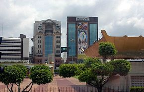

Загальна інформація

Бруней-держава в Південно-Східній Азії, розташована на півночі острова Борнео (Калімантан), що межує з Малайзією на суші, а на півночі омивається Південнокитайським морем. Столиця — Бандар-Сері-Бегаван..
Назва країни Бурні, Барунай, відома з XVI століття, імовірно, походить з гінді, видозмінене під випливом санскриту «бхурні» — землі або країна. Крім того, назва можливо була отримана від малайського вигуку радості першого легендарного султана Мухаммада Шаха «Бару нах!», що означає «ось воно», або «саме те, що треба».
Столиця
Бандар-Сері-Бегаван
Бандар-Сері-Бегаван - столиця Брунею. Населення міста близько 241 тисячі осіб (2014), що складає більше ніж половину населення країни. Також адміністративний центр округу Бруней-Муара.Бандар-Сері-Бегаван міститься на північному сході західної частини території Брунею. Місто лежить на північному (лівому) березі річки Бруней.
Центр міста Бандар-Сері-Бегаван
Географічне положення та клімат
Бруней розташований в екваторіальному кліматичному поясі.
- Площа — 5765 км² (з них 5265 км² — суша). Площа територіальних вод — 500 км².
- Середня температура — 28—30 °C, вологість повітря 82 %. У період мусонів (листопад-грудень) клімат вологіший і менш спекотний. Періодично, приблизно раз на 10 років, настають посухи, які тривають протягом декількох місяців.
Пам'ятки та історичні місця
Палац Султана
Палац Султана (Істана Нурул Імана). Побачивши таку приголомшливу розкіш, стає цікаво, у скільки обійшлася споруда з 1788 кімнатами, 257 ванними, 18 ліфтами і 5 басейнами? У різних джерелах фігурують суми від 500 млн до 1,4 млрд доларів. Палац займає площу в 200 тисяч м.кв і включає паркування на 5 тисяч машин.

Мечеть
Не менш важливою пам 'яткою є мечеть Джеймс Аср Хассанала Болкіаха, яку побудували в 1992 році. Розпізнати її серед інших мечетей не важко по 29 куполах, що височіють над містом. Кількість куполів обрана не випадково, адже мечеть побудована на честь 29 правителя Брунею. Мечеть відкрита щодня, а вхід - вільний.

Герб Брунею